Haptics ◆ UAV teleoperation ◆ Control barrier functions ◆ University of Toronto ◆ IEEE RA-L 2025
Feel the obstacle, fly the drone. A wearable suit with 32 vibration units renders obstacle directions on the upper body, and a control barrier function per obstacle (MultiCBF) decides which unit vibrates and how hard. Below: the suit in 3-D with every motor where the perceptual study put it, a live 3-D feed of the flights with the barriers drawn around the obstacles, a playground for the barrier maths, the paper's numbers, and a simulated re-run of the study with the released algorithm.
Teaser (23 s): the suit, the exploded vibration unit, the study set-up with the RC controller, a hidden obstacle felt through the shoulder, and the three conditions flown through the same tunnel: RC controller alone, haptic joystick, AeroHaptix.
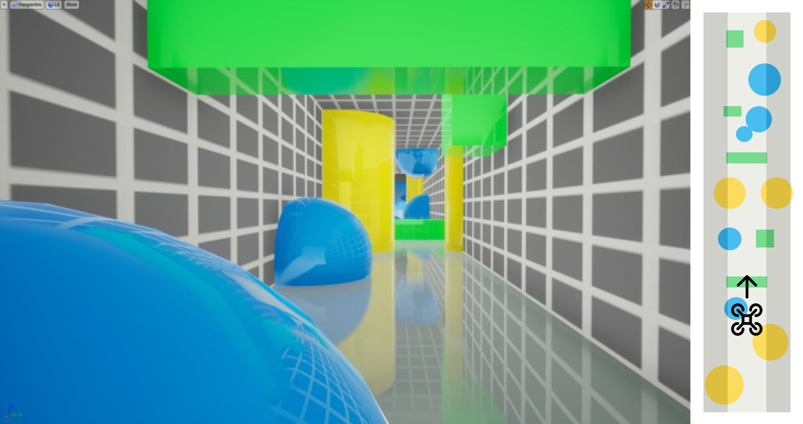
The drone is a double integrator. Each cube, sphere, pillar and wall gets a barrier function hi(q) ≥ 0 (a super-ellipsoid or a half-space), and the second-order barrier condition turns into one linear inequality on the acceleration input per obstacle.
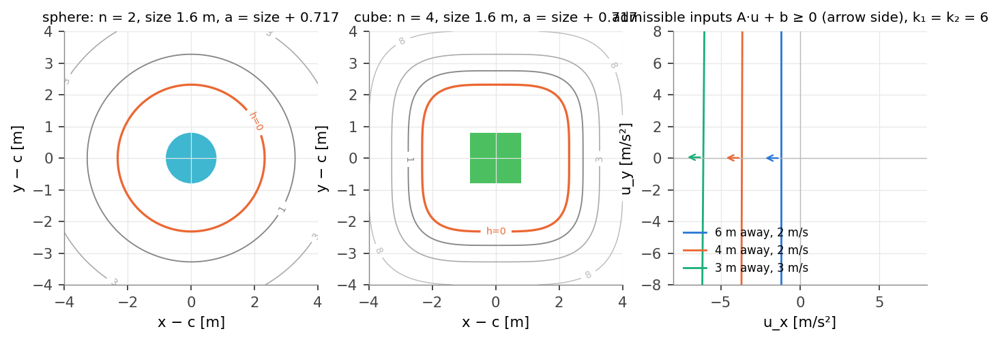
If the pilot's input violates obstacle i's inequality, the closest input that satisfies it is computed for that obstacle alone. The size of the correction is the vibration intensity; the direction to the obstacle picks the actuator. Several obstacles can be felt at once.
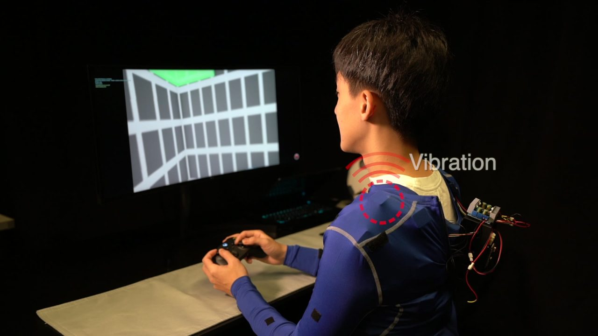
Vibration on the body leaves the hands free: the pilot keeps a normal RC controller, so the feedback cannot fight the input the way a force-feedback joystick does, and obstacles out of the camera's view are still felt.
Thirty-two voice-coil units on a stretch garment, wired as four chains. Each unit is where the perceptual study said a given obstacle direction is felt: four rings of eight directions, polar angle 30°, 60°, 90° and 120° from straight up, every 45° around. The scene below places every unit by shooting its direction ray out of a torso model and stretching the exit point onto the shoulder line, chest, ribs and hips (the paper's Fig. 5 layout). Hover a unit to read it, move the pointer around the body to put an obstacle there, or link the suit to the flight replay further down.
Ring colours: 30° shoulder line · 60° chest and upper back · 90° ribs and waist · 120° hips and lower back. Directions further down (150°) were dropped: participants could not feel "below" on the upper body, so in the study obstacles under the drone were mapped to the lower-back units.
Cap, PCB, rectangular enclosure, the voice-coil actuator, the cloth of the garment, and a bottom ring that press-fits through the fabric so a unit can be moved anywhere. Drag the slider to explode it.
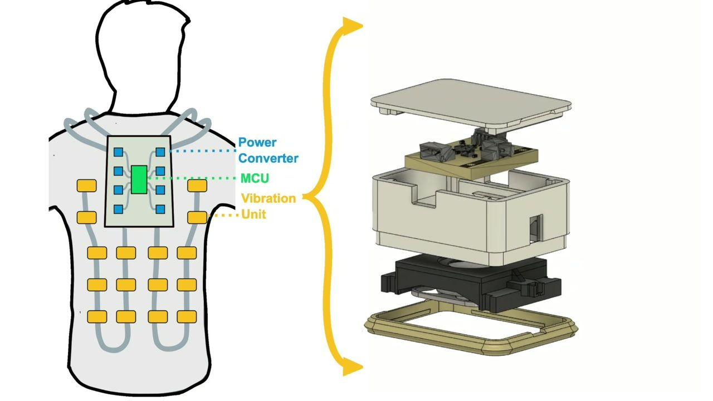
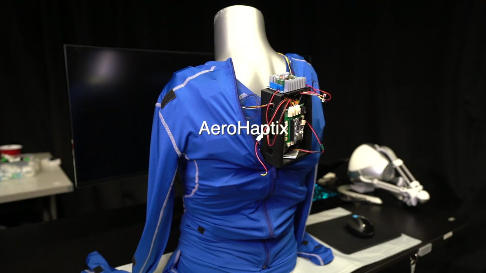
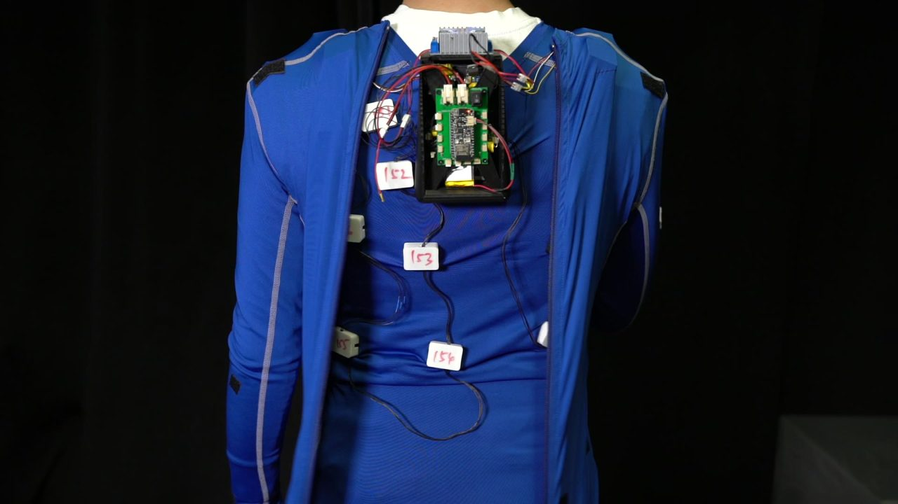
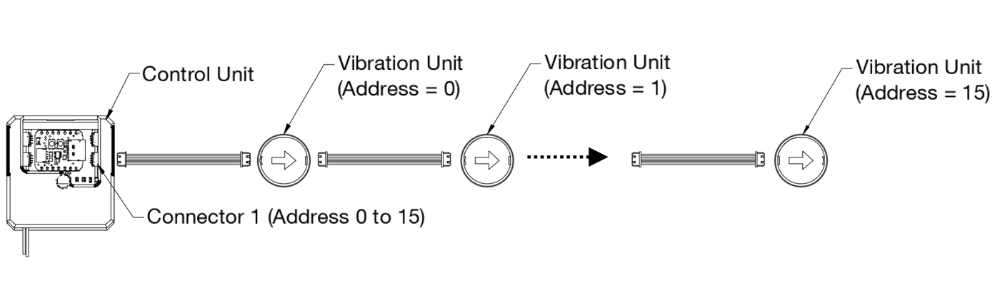
Dozens of units with their status LEDs on a garment: the same chained hardware, as productised in the VibraForge toolkit (CHI 2025).
The 32 sampled directions and where each is felt on the torso model, colour-coded by ring.
A uniform ring of actuators around the waist does not give uniform coverage of directions: proprioception is biased. So the layout came from data. Ten participants wore a 46-unit grid (18 on the front, 18 on the back, three on each side of the waist, two on each shoulder, 8 cm apart) and a Meta Quest 2 headset. Each trial buzzed one unit; the participant pointed a controller ray in the direction they felt it from and clicked. 46 units × 5 repetitions × 10 people gave 2,300 position-to-direction pairs.
An MLP (five hidden layers of 64, ReLU) learned the inverse map, from a direction (ϑ, φ) on the sphere to a body position, with a total-variation penalty for smoothness. Then 32 directions were sampled uniformly (ϑ ∈ {30°, 60°, 90°, 120°}, φ every 45°) and pushed through the network. The result puts units on the more curved parts of the body, shoulders and waist, and drops the lowest ring because nobody could feel "below" on the upper body. Toggle the 46-unit study grid in the scene above to see both layouts on one body.
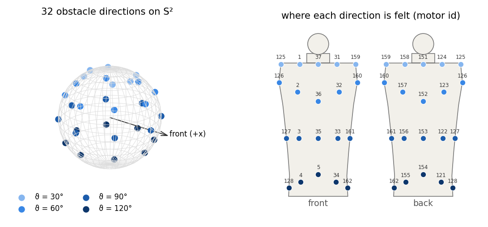
The drone is modelled as a double integrator with state x = [q, q̇] and the acceleration command u as input. Every obstacle bi gets a barrier function that is positive outside it and zero on its safety boundary:
Because u acts on the acceleration, the barrier has relative degree two and the exponential CBF condition is used:
One linear inequality in u per obstacle. The global safe input is the QP that projects the pilot's uref onto all of them at once, which is what earlier CBF haptics rendered as a single force. MultiCBF instead computes a local safe input for each obstacle whose inequality uref violates:
The correction's size is the vibration intensity of the actuator whose direction r̂j best matches the direction to the obstacle. In the released code k1 = k2 = 6, Kv = 3 duty levels per m/s² (clipped to the 16 levels), an obstacle is considered within 5 m of its shell, and the two strongest units are kept per frame. The drone tracked the pilot's own velocity command; the cues informed, they never overrode.
One obstacle, step by step (9 s): the drone holds a forward stick and passes a cube. Top left: the level sets of h and the operator's input (white) against the local safe input (green). Top right: the admissible half-plane A·u + b ≥ 0 in the input plane moving with the state. Bottom: h, ḣ and the duty of the unit that fires, and the body map. The drone enters the barrier shell (h < 0) but never the cube: the shell is padded by 0.717 m plus the obstacle's size.
A top view with the study's obstacle types. Drag the drone, the tip of its velocity, the tip of the operator's stick, or any obstacle. The input plane shows every in-range half-space, uref, the global QP solution and each obstacle's local safe input; the ring shows which of the eight horizontal units MultiCBF drives. Preview flies the current stick for four seconds with and without the CBF filter; Animate lets you steer live by dragging the stick.
The study tunnel, 5 × 5 × 50 m with four walls and fifteen random obstacles, rebuilt in 3-D from the simulated study below. Every obstacle wears its barrier shell (h = 0): grey when idle, brighter when in range, yellow when the pilot's input violates it and a unit fires, red when the drone is inside it. The arrows are the velocity (blue), the pilot's input (white) and the safe input (green). Switch between the chase camera, the operator's first-person camera (which always faces +x, so the right and upward tunnels are flown blind), a top view and a free orbit; the inset always shows the other view. The body map on the side and the suit above, when linked, show the units MultiCBF drives at that instant.
The replays are the simulated study's flights on one tunnel per direction (seed 4) with no feedback and with the cues. In fly it yourself, the same MultiCBF loop runs in your browser at 50 Hz: seed 0 is the replay's tunnel, other seeds are new tunnels of the same recipe. Plug in an Xbox controller and the sticks map as in the study.
Twelve participants (seven with UAV experience) flew a simulated quadrotor through cluttered tunnels in Microsoft AirSim, 70 minutes each. Three feedback conditions in a Latin square: NA, an Xbox controller and no feedback; FSC, a Novint Falcon haptic joystick rendering the single-CBF correction as a force; VSC, the Xbox controller plus AeroHaptix driven by MultiCBF. Three flying directions per condition, each a 5 × 5 × 50 m tunnel with four walls and fifteen cubes, spheres and cylinders placed at random: forward, with the front camera looking where the drone goes; right and upward, where the camera looks +x and the obstacles arrive from the side or from above, mostly unseen.
Measured per flight: total distance, number of collisions, and input disagreement, the mean of ‖uref − usafe‖. Subjectively: NASA-TLX, four Likert questions on sense of control, and a situational-awareness probe: at a random 10 to 40 m the simulation paused and the participant listed the obstacles they perceived, split into visible ones and ones felt only through haptics.
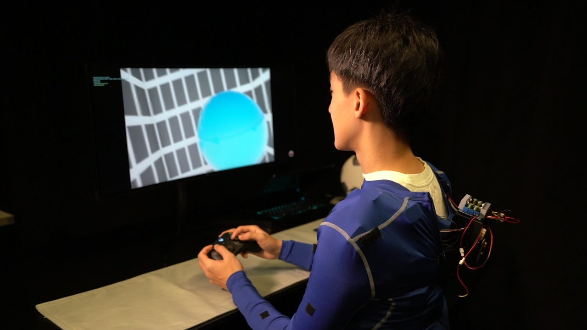
Objective results by feedback condition (left group) and by flying direction (right group), mean ± SEM, values read off the paper's Fig. 7 (± 0.2). Both AeroHaptix (VSC) and the force joystick (FSC) reduced collisions against no feedback, only VSC reduced the disagreement between the pilot and the safe input, and flying right or upward tripled the collisions of flying forward. Hover a bar for its value.
Left: the force joystick cost physical demand and effort; the suit did not, and scored far higher on "how much did the haptic feedback help". Right: participants reported more obstacles they had only felt with AeroHaptix than with the joystick (situational awareness), and more in the blind directions.
Against no feedback, VSC cut collisions (p < 0.05) and input disagreement (p < 0.01). Accepted.
Flying right or upward caused about three times the collisions of flying forward (p < 0.01), and that is where haptic obstacles were reported most. Accepted.
More felt-only obstacles were reported with VSC than with FSC (p < 0.05). Accepted. Workload (H3) and sense of control (H4) did not differ significantly between the two haptic conditions, though physical demand and effort favoured the suit.
The paper's simulator was AirSim on a Windows laptop with the physical suit on a person; neither is on this page. What is here is the released algorithm, re-implemented and verified (barrier gradients against finite differences, the QP against SLSQP), driving a 50 Hz simulation of the same tunnel recipe with a modelled operator instead of a human. The operator sees obstacles through a 90° front camera and a weaker, later top-down inset; reacts to visual obstacles after 0.35 s and to cues after 0.35 s by pushing the stick away from the actuator's own direction; and flies at 2 m/s with a 0.15 s stick lag. Twenty-four tunnels per direction, the same tunnels for both conditions, 1,332 flights in all counting the sweeps. Numbers below are means ± SEM over tunnels.
The modelled operator reproduces the paper's pattern: forward is easiest, right and upward are worst without feedback, the cues cut collisions and disagreement in every direction. The size of the haptic benefit is larger than with real people (the model reacts to every strong cue), and the sweeps below show how quickly it shrinks as the operator gets slower or the cue gets weaker. Flights with cues are slower: the modelled operator brakes when a cue comes from ahead.
| condition | direction | tunnels | collisions | distance [m] | |u_ref − u_safe| [m/s²] | time [s] | cue on [% frames] |
|---|---|---|---|---|---|---|---|
| no feedback | forward | 24 | 2.92 ± 0.21 | 55.4 ± 0.2 | 5.13 ± 0.23 | 29.6 ± 0.1 | 0 |
| no feedback | right | 24 | 5.71 ± 0.32 | 54.7 ± 0.3 | 7.46 ± 0.47 | 31.0 ± 0.3 | 0 |
| no feedback | upward | 24 | 5.92 ± 0.35 | 54.7 ± 0.3 | 7.61 ± 0.49 | 31.3 ± 0.3 | 0 |
| AeroHaptix cues | forward | 24 | 0.54 ± 0.15 | 57.8 ± 0.3 | 3.01 ± 0.10 | 38.0 ± 0.2 | 80 |
| AeroHaptix cues | right | 24 | 0.67 ± 0.20 | 57.1 ± 0.3 | 3.87 ± 0.19 | 42.0 ± 0.4 | 85 |
| AeroHaptix cues | upward | 24 | 0.83 ± 0.26 | 57.2 ± 0.4 | 3.75 ± 0.17 | 42.5 ± 0.5 | 86 |
Chase view with the barrier shells, the body map, the top view and the timeline of h and duty. The operator sees what is ahead and still clips a few obstacles.
The same tunnel, the same operator model. Units fire when the input violates a shell (yellow), and the path bends before the shell turns red.
No feedback against AeroHaptix on the same tunnel: collisions as yellow crosses, the disagreement as it accumulates.
The tunnel runs to the right of the camera; obstacles are only noticed on the top-down inset, late.
The ribs-and-waist ring on the right side does most of the work here.
The blind direction is where the cues buy the most.
Obstacles come from above the camera's view.
The shoulder-line ring fires for what is ahead along the climb; the lower-back units for what is below.
The clip on the publication card.
How many actuators? Cues quantised to 8 or 16 directions point up to 37° or 27° away from the obstacle and the operator dodges the wrong way more often; 32 directions (14° mean error) get most of what an exact direction gives. The 48-direction grid includes the ring the paper dropped and does not help.
Angular error of the cue for the same layouts, the geometric reason behind the left panel.
The operator matters more than the algorithm. Collisions against the delay between a cue and the stick response, for three intensity gains. A pilot who needs 0.8 s loses most of the benefit; a stronger gain (Kv = 6) buys some of it back. The dashed line is no feedback.
Barrier gains and padding. Small gains (k = 2) fire the cue too late to help; the paper's k = 6 is on the knee. More padding fires earlier and reduces collisions a little, at the price of a suit that buzzes most of the time and a much larger disagreement (12 m/s² at k = 12, 1.2 m).
How often a unit is on for the same sweep: the study's settings keep a unit active about 84 % of the frames in these dense tunnels.
Field of view barely matters; where the camera points does. Widening the front camera from 60° to 120° changes little in any direction, because the right and upward tunnels put the obstacles outside any forward-facing view.
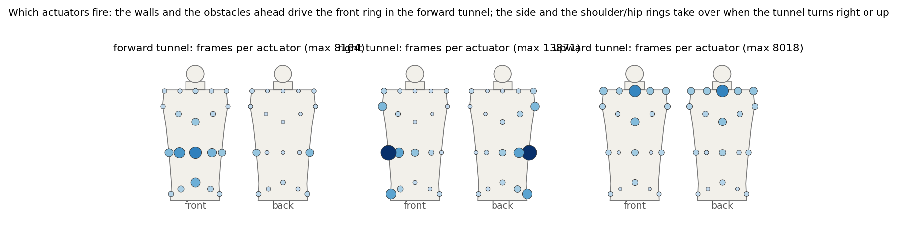
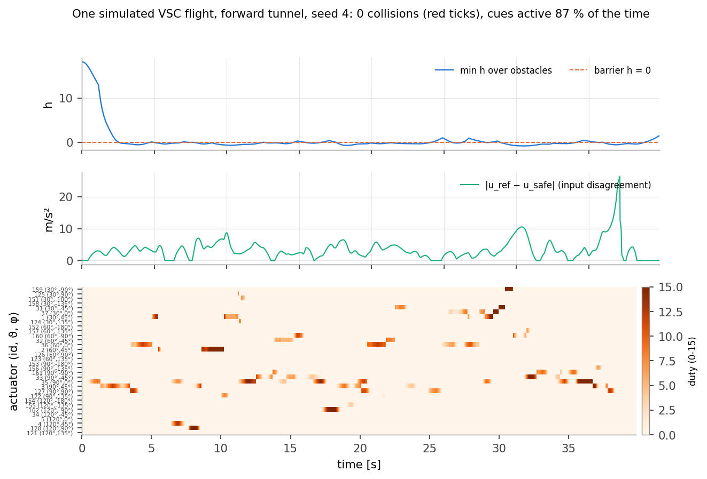
With a 3-D input, the QP over all in-range constraints is solved exactly by enumerating the active sets of at most three rows, with a bound that prunes rows that cannot be active. Under 2 ms per 50 Hz frame in Python with fifteen obstacles and four walls, and it runs in your browser above.
The released code feeds the ECBF with u = vcmd − v, a velocity increment per frame rather than an acceleration, and applies the same to the drone. The re-run keeps this convention so the numbers are comparable; it is why the disagreement is reported in m/s² but scales with the stick.
No human, no AirSim physics, no real vibration perception: the operator model is a proxy whose parameters set the size of every effect. The paper's numbers stand on their own; the re-run shows the mechanism and which knobs it is sensitive to.
Everything on this page comes from one small Python package and a handful of scripts; there are no trained weights. The package holds the barriers, the exact QP, the released 32-direction table, the tunnel generator, the operator model and the 50 Hz loop; the scripts run the campaign in shards, draw the figures, render the videos and export the scene JSON the 3-D feed plays.
# AeroHaptix/experiments python -m pytest -q tests # gradients vs finite differences, QP vs SLSQP, layout, cues, flights python run_study.py main --seeds 24 --shard 0 --nshards 3 # x3 shards python run_study.py sweeps --seeds 12 --shard 0 --nshards 4 # x4 shards python run_study.py merge # out/study.json + the summary tables python make_figures.py # docs/figures/*.pdf, site PNGs, results JSON, numbers.tex python make_videos.py --which all # out/video/*.mp4 -> assets/videos/ python export_web.py # assets/data/aerohaptix_scene.json for the 3-D feed cd ../docs && make # aerohaptix.pdf, the technical report
Files. aerohaptix/cbf.py (SuperEllipsoid, Cylinder, Plane, local_safe, global_safe), suit.py (Layout, render_cues, the torso model), world.py (Tunnel), pilot.py (the operator), sim.py (fly). The browser twin is assets/js/aerohaptix_cbf.js; the scenes are aerohaptix_scene3d.js (three.js), the playground aerohaptix_playground.js, the charts aerohaptix_plots.js.
Seeds. Tunnels are seeded per (direction, seed); the operator's noise is seeded per tunnel, so a flight is a deterministic function of (direction, seed, condition) and the same tunnels are flown under every condition.
The paper's own code (AirSim client, Falcon bindings, the ECBF classes and the BLE tactile module) is at huangbj16/DroneSimulation; the actuator direction table on this page is that repository's ActuatorDirections_norm.txt.
Technical report (PDF): the derivations, the solver, the operator model, every figure with its numbers, and the limitations.
AeroHaptix: A Wearable Vibrotactile Feedback System for Enhancing Collision Avoidance in UAV Teleoperation. Bingjian Huang, Zhecheng Wang, Qilong Cheng, Siyi Ren, Hanfeng Cai, Antonio Alvarez Valdivia, Karthik Mahadevan and Daniel Wigdor. IEEE Robotics and Automation Letters, 2025 (arXiv 2407.12105, July 2024). Dynamic Graphics Project, University of Toronto.
The hardware line continues as VibraForge (CHI 2025), an open-source toolkit for large vibrotactile arrays. Teaser video, study frames and the chain diagrams are from the paper and its video; the 3-D suit, the playground, the flights, the re-run figures and the report on this page are mine, built on the released code. The single-CBF haptic teleoperation MultiCBF extends is Zhang, Yang and Khurshid, IEEE Transactions on Haptics 13(1), 2020.